東醫寶鑑 두통 원인별 증상·징후 및 경혈 해부구조 가로 9 × 세로 36 매트릭스 종합 보고서
본 종합 보고서는 『동의보감(東醫寶鑑)』 16대 두통 분류 체계, 『중국침구증치통감(中國針灸證治通鑑)』 원원전 침구 처방, 및 경희대학교/한의학연구원 김재효 교수의 『경혈 해부구조 데이터셋』(361개 WHO 경혈)을 정밀 결합하여 가로 9 × 세로 36 인체 공간 해부학적 매트릭스(Anatomy Human Matrix Grid)로 종합 구현한 결정판 보고서입니다.
🩺 인체 전신 수직 축 & 9 × 36 위치 매트릭스 복합 그래픽

🎨 16대 두통 원인별 증상·징후 9 × 36 공간 열지도 매트릭스

풍두통 (風頭痛) 외감 풍사 (外感風邪)
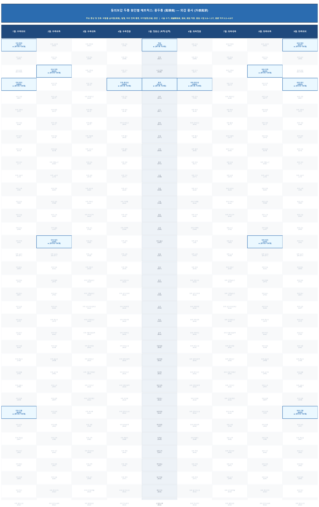
📖 동의보감 주요 증상: 바람을 싫어함(惡風), 발열, 통증 부위가 고정되지 않고 머리 전체로 뻗치며 어지럼증(目眩) 동반
🎯 주요 치료 경혈: 風池(GB20), 風府(GV16), 百會(GV20), 合谷(LI4), 攢竹(BL2), 通天(BL7), 崑崙(BL60)
🧬 해부학적 타겟(근육/신경/혈관): 등세모근, 머리널판근, 머리반가시근, 머리덮개널힘줄, 큰/작은뒤통수신경, 얕은관자동·정맥
💉 침구 자침·구법 수기: 瀉諸陽熱氣, 淺刺, 瀉法 적용. 風池 사침 0.8~1.2寸, 風府 직자 0.5~0.8寸
📚 원전 출처: 《明堂經》 "主頭項惡風, 風眩目痛", 《千金要方》 "主頭風, 頭重風勞"
편두통 (偏頭痛) 좌/우 편측성 (좌: 혈허·풍 / 우: 기허·담열)
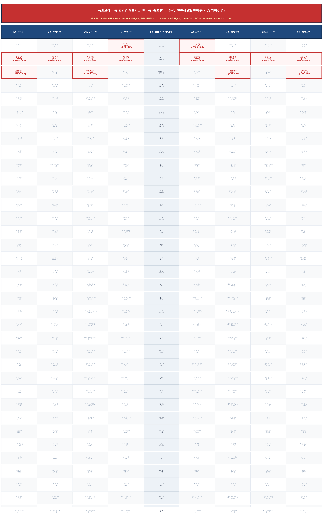
📖 동의보감 주요 증상: 한쪽 관자놀이(太陽穴) 및 뇌각(腦角) 통증, 미릉골 당김
🎯 주요 치료 경혈: 太陽(奇穴), 絲竹空(TE23), 率谷(GB8), 角孫(TE20), 懸顱(GB5), 頭維(ST8)
🧬 해부학적 타겟(근육/신경/혈관): 관자근(Temporalis), 눈둘레근, 광대관자신경, 귓바퀴관자신경, 얕은관자동·정맥
💉 침구 자침·구법 수기: 아픈 쪽(患側) 太陽·絲竹空 삼릉침 점자출혈(瀉血). 率谷 평자 0.3~0.5寸
📚 원전 출처: 《千金要方》 "偏頭痛 刺絲竹空 瀉血", 《明堂經》 "主偏頭痛 熱病"
뇌역두통 (腦逆頭痛) 심한 한기 침범 (極寒侵襲)
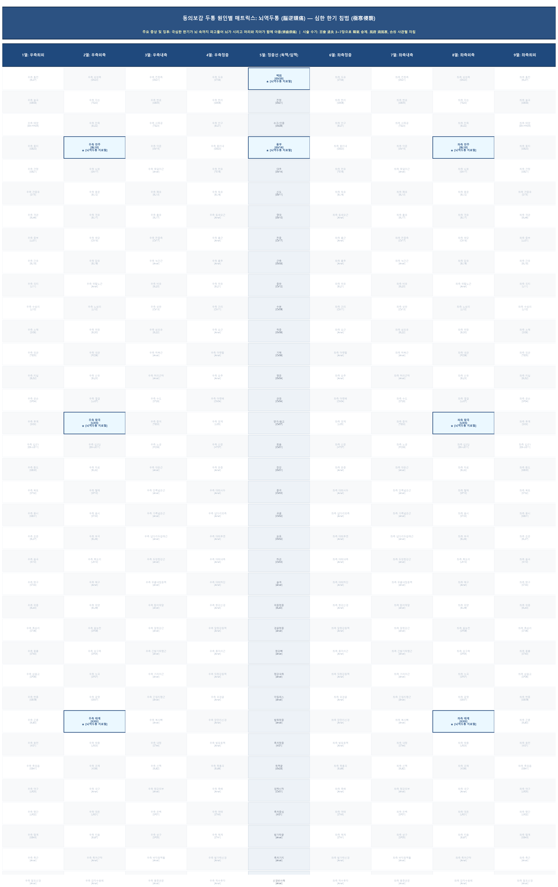
📖 동의보감 주요 증상: 극심한 한기가 뇌 속까지 파고들어 뇌가 시리고 머리와 치아가 함께 아픔(頭齒俱痛)
🎯 주요 치료 경혈: 百會(GV20), 風府(GV16), 天柱(BL10), 合谷(LI4), 太溪(KI3), 迎香(LI20)
🧬 해부학적 타겟(근육/신경/혈관): 머리덮개널힘줄, 머리반가시근, 큰뒤통수신경, 눈확아래신경(V2), 척추동정맥
💉 침구 자침·구법 수기: 百會 溫灸 3~7장으로 陽氣 승제. 風府 瀉風寒, 合谷 사관혈 자침
📚 원전 출처: 《明堂經》 "風到腦中寒", 《銅人經》 "主腦痛", 《東醫寶鑑》 百會 諸陽之會
궐역두통 (厥逆頭痛) 기혈 순환 장애 (氣血循環障礙)
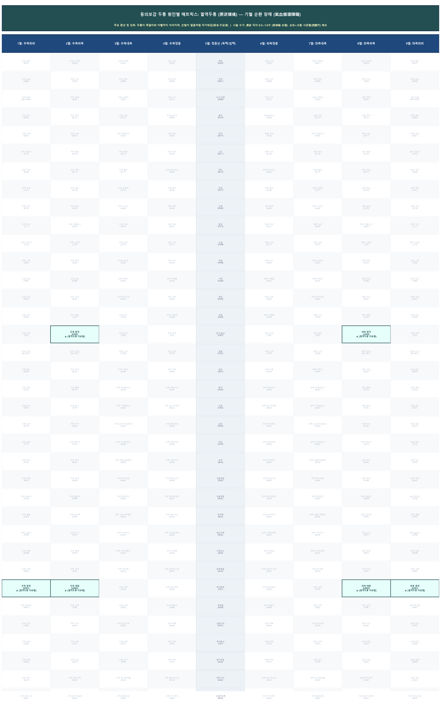
📖 동의보감 주요 증상: 두통이 목덜미와 이빨까지 이어지며, 손발이 얼음처럼 차가워짐(厥冷·手足淸)
🎯 주요 치료 경혈: 湧泉(KI1), 太衝(LR3), 太白(SP3), 商丘(SP5), 合谷(LI4)
🧬 해부학적 타겟(근육/신경/혈관): 발바닥널힘줄, 첫째 등쪽뼈사이근, 안쪽발바닥신경, 깊은종아리신경, 바닥쪽동맥활
💉 침구 자침·구법 수기: 湧泉 직자 0.5~1.0寸 (厥頭痛 요혈). 合谷+太衝 사관혈(四關穴) 배오
📚 원전 출처: 《明堂經》 "主厥頭痛 足暴淸", 《靈樞·雜病》 "厥頭痛 取足少陰·厥陰"
담궐두통 (痰厥頭痛) 담음 상충 (痰陰上衝)
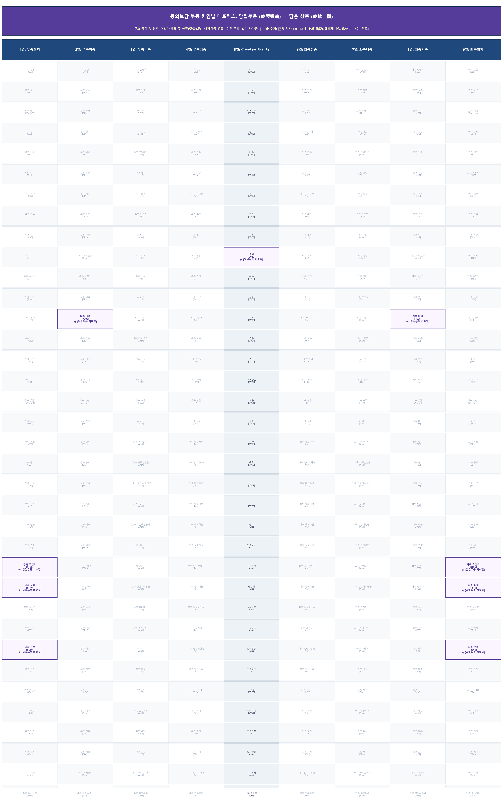
📖 동의보감 주요 증상: 머리가 깨질 듯 아픔(頭痛如裂), 어지럼증(眩暈), 심한 구토, 발이 차가움
🎯 주요 치료 경혈: 豐隆(ST40), 中脘(CV12), 足三里(ST36), 內關(PC6), 崑崙(BL60)
🧬 해부학적 타겟(근육/신경/혈관): 앞정강근, 배곧은근, 긴손바닥근, 깊은종아리신경, 정중신경(Median N), 앞정강동정맥
💉 침구 자침·구법 수기: 豐隆 직자 1.0~1.5寸 (化痰 降逆). 足三里·中脘 溫灸 7~14장 (健脾)
📚 원전 출처: 《明堂經》 "風頭痛如破 足寒如水 欲嘔 崑崙主之", 《靈樞》 邪在胃脘 取三里
기궐두통 (氣厥頭痛) 기허 상충 (氣虛上衝)
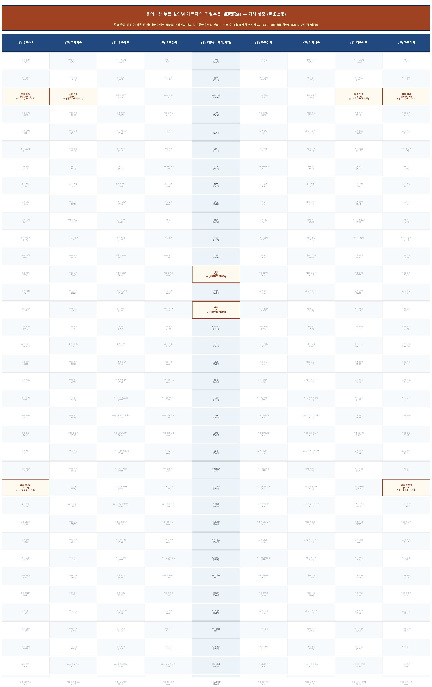
📖 동의보감 주요 증상: 양쪽 관자놀이와 눈썹뼈(眉稜骨)가 당기고 아프며, 따뜻한 온찜질 선호
🎯 주요 치료 경혈: 攢竹(BL2), 太陽(奇穴), 氣海(CV6), 關元(CV4), 足三里(ST36)
🧬 해부학적 타겟(근육/신경/혈관): 눈썹주름근, 뒤통수이마근 이마힘살, 백색선, 눈확위신경(V1), 얕은배벽동정맥
💉 침구 자침·구법 수기: 攢竹 내하향 사침 0.3~0.5寸. 氣海·關元 하단전 溫灸 5~7장 (培元補氣)
📚 원전 출처: 《明堂經》 "主風頭痛 眉頭痛", 《針灸大成》 眉稜骨痛 針攢竹·太陽
혈궐두통 (血厥頭痛) 음혈 부족 (陰血不足)
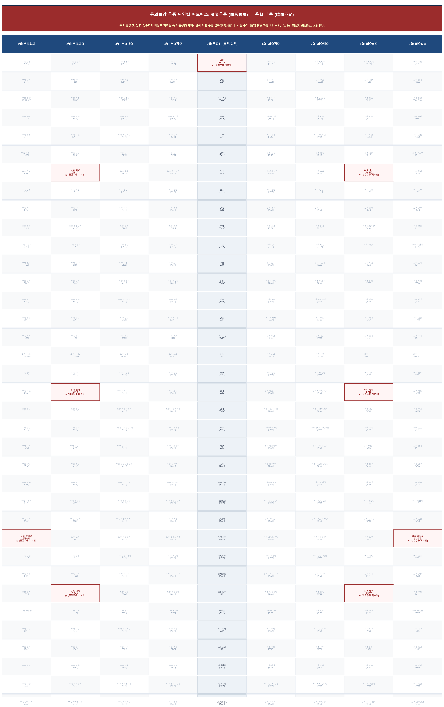
📖 동의보감 주요 증상: 정수리가 바늘로 찌르는 듯 아픔(痛如針刺), 밤이 되면 통증 심화(夜間加重)
🎯 주요 치료 경혈: 百會(GV20), 膈俞(BL17), 三陰交(SP6), 太衝(LR3), 血海(SP10)
🧬 해부학적 타겟(근육/신경/혈관): 머리덮개널힘줄, 등세모근, 가자미근, 큰뒤통수신경, 일곱째 가슴신경 뒤가지, 뒤정강동정맥
💉 침구 자침·구법 수기: 膈俞 補法 자침 0.5~0.8寸 (血會). 三陰交 滋陰養血, 太衝 降火
📚 원전 출처: 《素問·臟氣法時論》 "厥陰氣逆則頭痛", 《針灸治療學》 血虛頭痛 補三陰交·膈俞
신궐두통 (腎厥頭痛) 신정 허손 (腎精虛損)
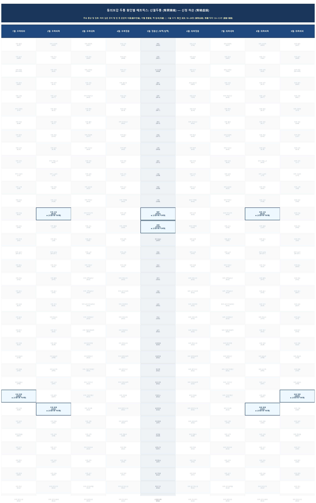
📖 동의보감 주요 증상: 머리 깊은 곳이 텅 빈 듯 은은히 아픔(腦中空痛), 이빨 흔들림, 맥 침세(沉細)
🎯 주요 치료 경혈: 腎俞(BL23), 太溪(KI3), 命門(GV4), 關元(CV4), 懸鍾(GB39)
🧬 해부학적 타겟(근육/신경/혈관): 등허리근막, 허리네모근, 뭇갈래근, 둘째 허리신경 뒤가지, 정강신경, 허리동맥 등쪽가지
💉 침구 자침·구법 수기: 腎俞 溫灸 10~20장 (補腎益精). 懸鍾 직자 1.0~1.5寸 (髓會 補髓)
📚 원전 출처: 《明堂經》 "腎虛 骨髓煩疼 烙腎俞·關元", 《靈樞·海論》 髓海不足 則腦轉耳鳴
진두통 (眞頭痛 - 응급) 위중 사증 (死證 / 응급 위중)
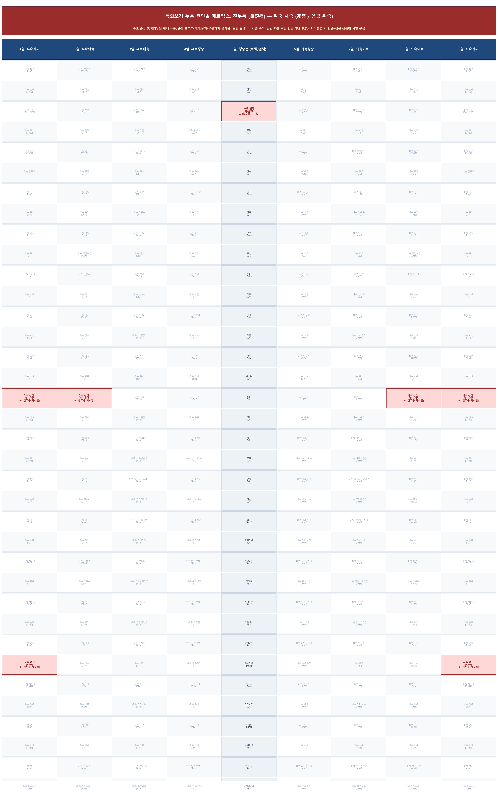
📖 동의보감 주요 증상: 뇌 전체 극통, 손발 한기가 팔팔꿈치/무릎까지 올라옴 (손발 厥冷)
🎯 주요 치료 경혈: 水溝/人中(GV26), 十宣(EX-UE11), 湧泉(KI1) [禁針禁灸]
🧬 해부학적 타겟(근육/신경/혈관): 입둘레근, 손가락 유두층 널힘줄, 눈확아래신경 위입술가지, 고유바닥쪽손가락신경
💉 침구 자침·구법 수기: 일반 자침·구법 엄금 (禁針禁灸). 의식불명 시 인중/십선 삼릉침 사혈 구급 후 즉시 이송
📚 원전 출처: 《靈樞·厥病》 "眞頭痛頭痛甚 手足寒至節 不可治", 《東醫寶鑑》 眞頭痛 嚴禁針灸
취포두통 (醉飽頭痛) 식적 및 습열 (食積·濕熱)
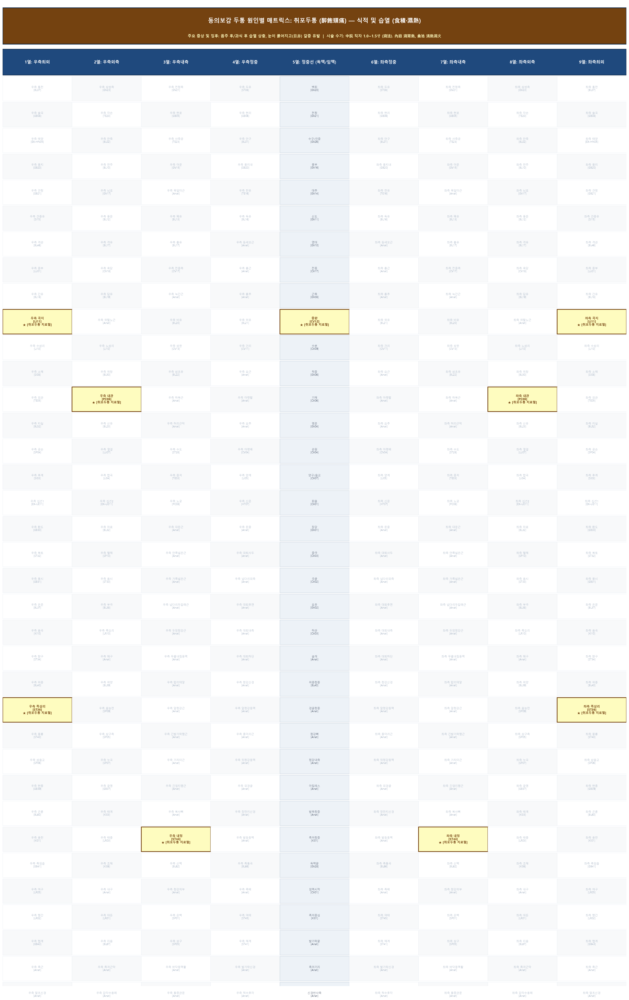
📖 동의보감 주요 증상: 음주 후/과식 후 습열 상충, 눈이 붉어지고(目赤) 갈증 유발
🎯 주요 치료 경혈: 中脘(CV12), 內庭(ST44), 足三里(ST36), 曲池(LI11), 內關(PC6)
🧬 해부학적 타겟(근육/신경/혈관): 백색선, 긴발가락폄근, 위팔노근, 갈비사이신경, 얕은종아리신경, 위배벽동정맥
💉 침구 자침·구법 수기: 中脘 직자 1.0~1.5寸 (瀉法). 內庭 瀉胃熱, 曲池 淸熱瀉火
📚 원전 출처: 《勉學堂針灸集成》 "食積 針中脘·三里", 《明堂經》 "主傷寒余熱 目赤痛 瀉曲池"
기허두통 (氣虛頭痛) 기력 저하 (氣力低下)
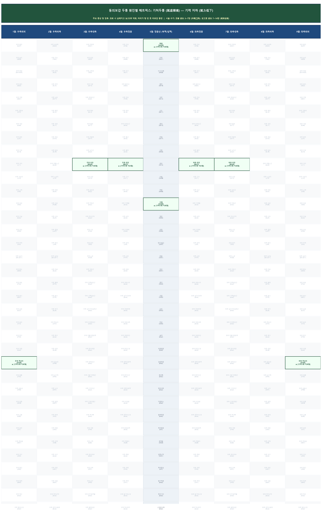
📖 동의보감 주요 증상: 과로 시 심해지고 낮/오후 악화, 머리가 텅 빈 듯 피로감 동반
🎯 주요 치료 경혈: 百會(GV20), 足三里(ST36), 氣海(CV6), 脾俞(BL20), 胃俞(BL21)
🧬 해부학적 타겟(근육/신경/혈관): 머리덮개널힘줄, 앞정강근, 백색선, 큰뒤통수신경, 가쪽장딴지피부신경, 앞정강동정맥
💉 침구 자침·구법 수기: 百會 溫灸 3~7장 (升陽舉陷). 足三里 溫灸 7~14장 (健脾益氣)
📚 원전 출처: 《東醫寶鑑》 담궐/기허두통 족삼리·중완 뜸 보강, 《針灸大成》 氣虛頭痛 灸百會·三里
혈허두통 (血虛頭痛) 음혈 허손 (陰血虛損)
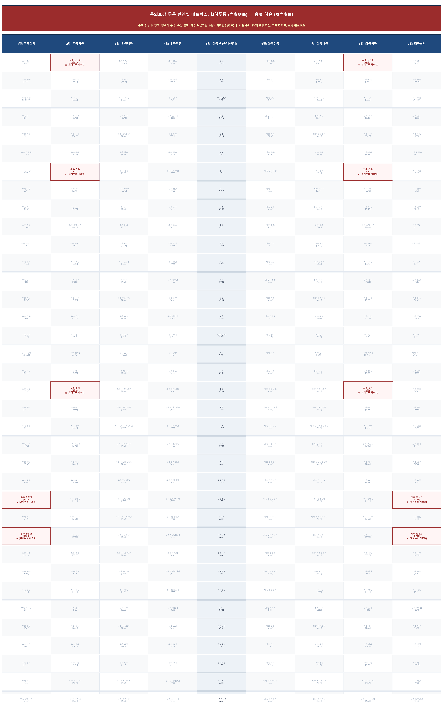
📖 동의보감 주요 증상: 정수리 통증, 야간 심화, 가슴 두근거림(心悸), 어지럼증(眩暈)
🎯 주요 치료 경혈: 膈俞(BL17), 三陰交(SP6), 血海(SP10), 上星(GV23), 足三里(ST36)
🧬 해부학적 타겟(근육/신경/혈관): 등세모근, 가자미근, 안쪽넓은근, 일곱째 가슴신경 뒤가지, 정강신경, 넙다리동정맥
💉 침구 자침·구법 수기: 膈俞 補法 자침, 三陰交 滋陰, 血海 補血活血
📚 원전 출처: 《針灸治療學》 "血虛頭痛 取上星·血海·足三里·三陰交", 《千金要方》 血虛治法
습열두통 (濕熱頭痛) 습열 뭉침 (濕熱蘊結)
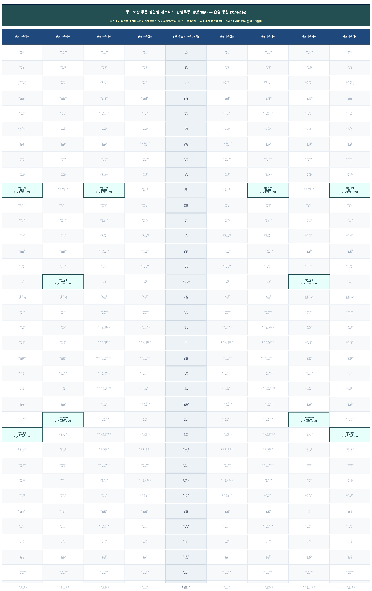
📖 동의보감 주요 증상: 머리가 수건을 얹어 놓은 것 같이 무겁고(頭重如裹), 전신 찌뿌둥함
🎯 주요 치료 경혈: 陰陵泉(SP9), 曲池(LI11), 合谷(LI4), 豐隆(ST40), 脾俞(BL20)
🧬 해부학적 타겟(근육/신경/혈관): 오금근, 가자미근, 위팔노근, 첫째 등쪽뼈사이근, 두렁신경, 정강신경, 큰두렁정맥
💉 침구 자침·구법 수기: 陰陵泉 직자 1.0~1.5寸 (利濕淸熱). 豐隆 化濕清熱
📚 원전 출처: 《針灸聚英》 "濕寒濕熱下定", 《明堂經》 利濕淸熱 穴位處方
열두통 (熱頭痛) 풍열 상충 (風熱上衝)
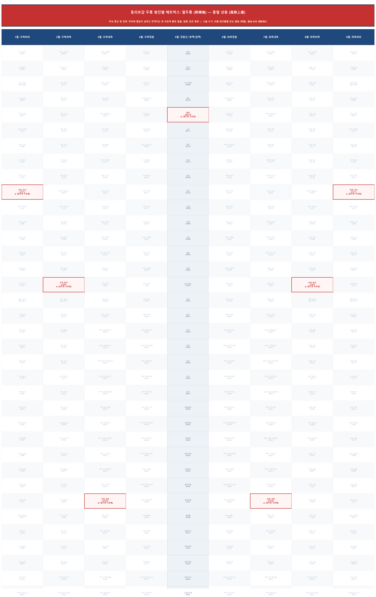
📖 동의보감 주요 증상: 머리에 열감이 심하고 쪼개지는 듯 아프며 붉은 얼굴, 갈증, 번조 동반
🎯 주요 치료 경혈: 大椎(GV14), 曲池(LI11), 合谷(LI4), 內庭(ST44)
🧬 해부학적 타겟(근육/신경/혈관): 등세모근 힘줄, 가시위인대, 위팔노근, 여덟째 목신경 뒤가지, 노신경, 노쪽되돌이동맥
💉 침구 자침·구법 수기: 大椎 점자출혈 또는 瀉法 (해열). 曲池·合谷 淸熱瀉火
📚 원전 출처: 《素問·刺熱》 "病始於頭首 先刺項太陽 出血", 《明堂經》 淸熱瀉火法
습두통 (濕頭痛) 한습 정체 (寒濕停滯)
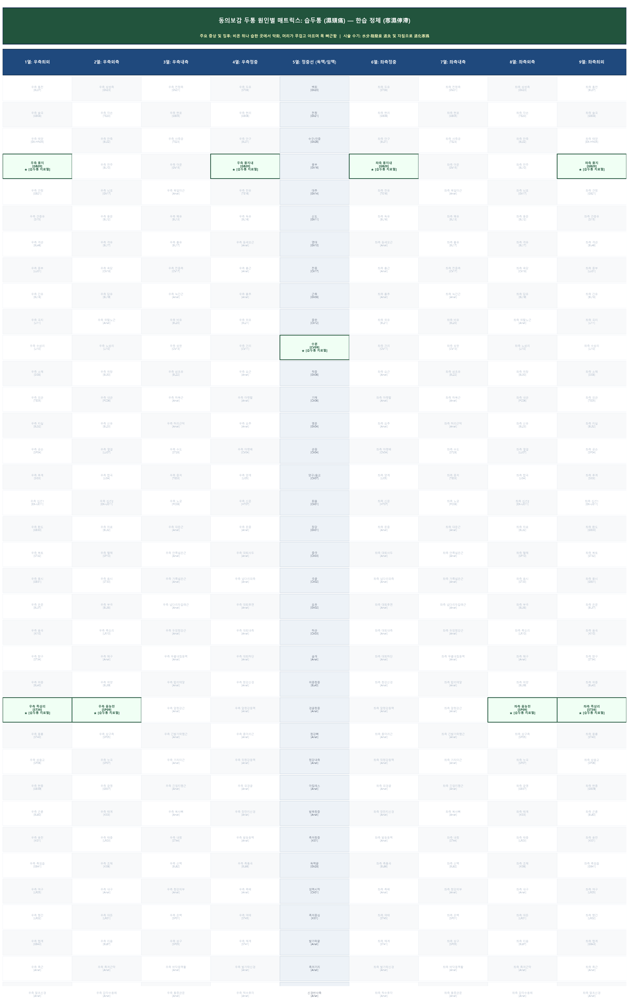
📖 동의보감 주요 증상: 비온 뒤나 습한 곳에서 악화, 머리가 무겁고 아프며 목 뻐근함
🎯 주요 치료 경혈: 水分(CV9), 陰陵泉(SP9), 足三里(ST36), 風池(GB20)
🧬 해부학적 타겟(근육/신경/혈관): 백색선, 오금근, 가자미근, 앞정강근, 아홉째 갈비사이신경, 두렁신경, 위배벽동정맥
💉 침구 자침·구법 수기: 水分·陰陵泉 溫灸 및 자침으로 溫化寒濕
📚 원전 출처: 《針灸資生經》 寒濕頭痛 灸水分·陰陵泉
두풍증 (頭風證) 만성 풍사 체류 (風邪久留)
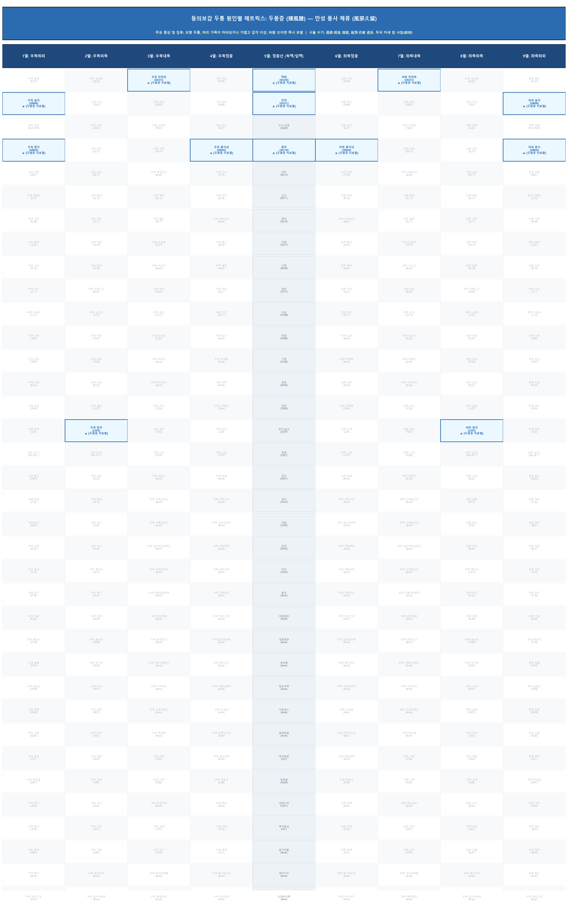
📖 동의보감 주요 증상: 오랜 두통, 머리 가죽이 마비되거나 가렵고 감각 이상, 바람 쏘이면 즉시 유발
🎯 주요 치료 경혈: 風府(GV16), 風池(GB20), 百會(GV20), 前頂(GV21), 率谷(GB8), 合谷(LI4)
🧬 해부학적 타겟(근육/신경/혈관): 등세모근, 머리널판근, 머리덮개널힘줄, 관자근, 큰/작은뒤통수신경, 얕은관자동정맥
💉 침구 자침·구법 수기: 風府·風池 瀉風, 前頂·百會 溫灸. 두피 미세 침 사침(斜刺)
📚 원전 출처: 《扁鵲心書》 "患頭風兼頭暈者 刺風府穴", 《聖惠方》 頭風項痛 灸前頂·率谷